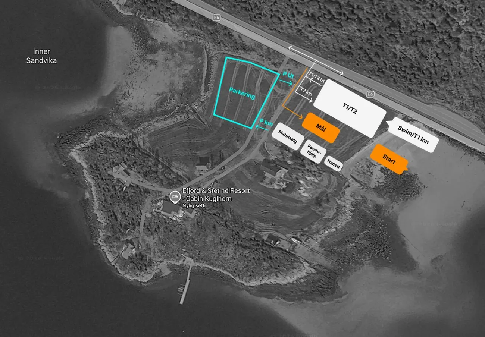
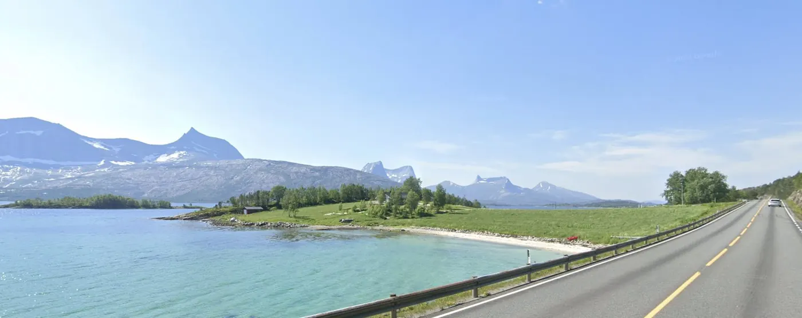
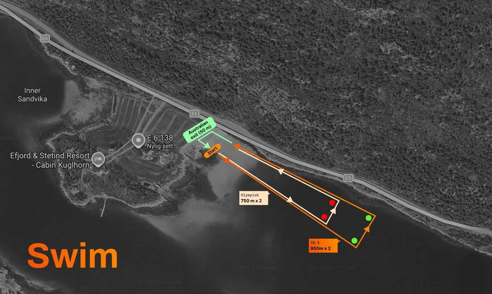
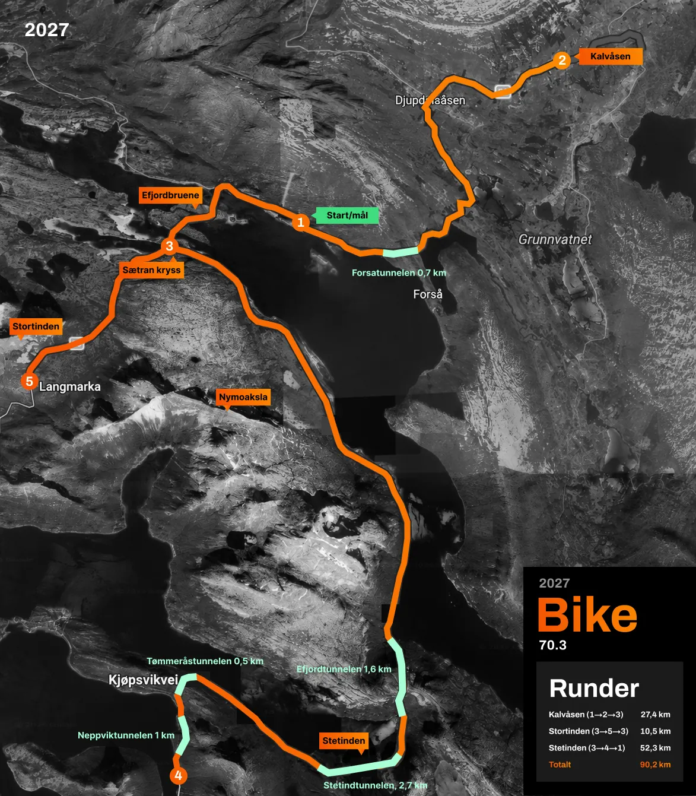
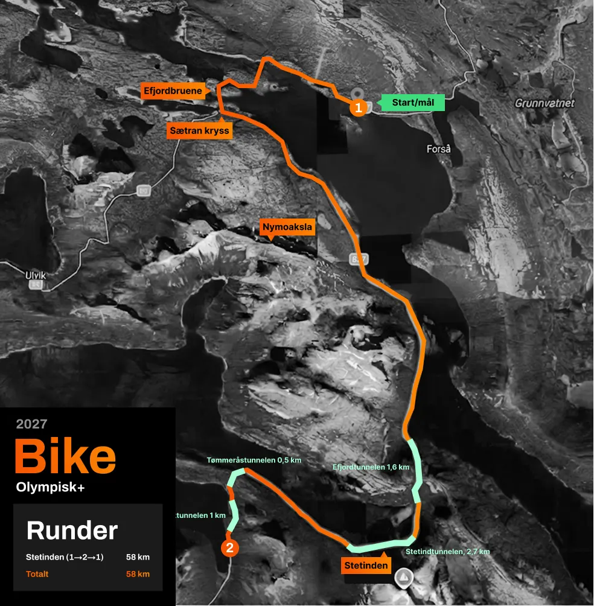
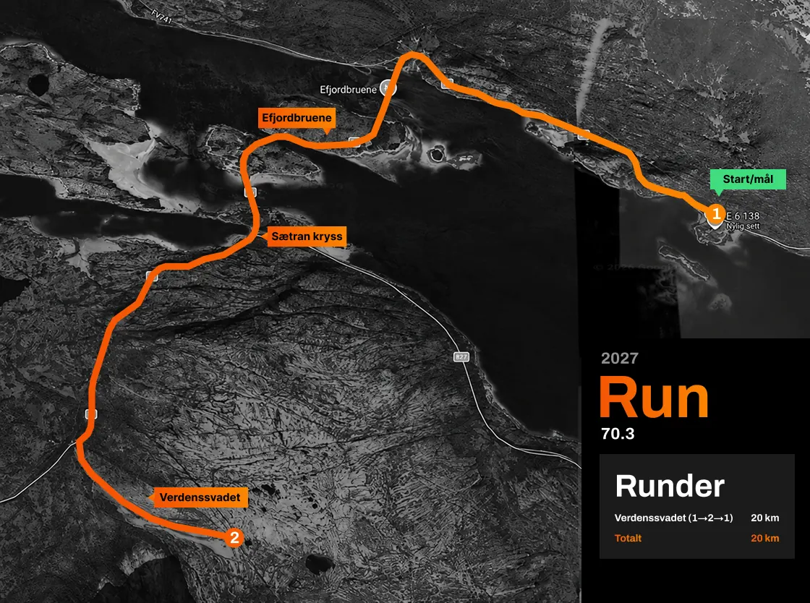
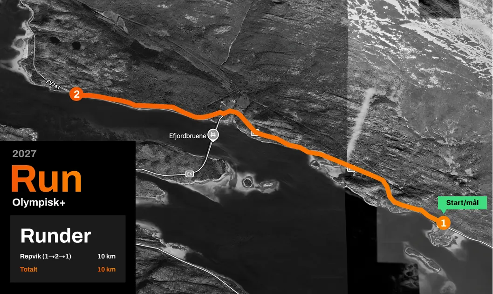

Ny sponsor på laget!
Vi har landet en partneravtale med LKAB Norge AS. Det gjør at vi kan profesjonalisere arrangementet mye mer. Velkommen på laget!
Svømming, sykling og løping gjennom rå fjell, fjord og arktisk natur i Efjord, Nord-Norge.
Alle distansene starter samtidig i stranda ved Efjord & Stetind Resort i Inner Sandvika og følger samme trasé, bare med ulik lengde. Fra fjorden, opp i fjellet, og hele veien tilbake til mål.
Svømmingen starter i stranda ved Efjord & Stetind Resort i Inner Sandvika. Du svømmer østover inn mot Efjorden, langs land hele veien, i klart fjordvann med fjell på alle kanter.
Sykkeletappen følger E6 gjennom postkortlandskap: opp Kalvåsen, forbi Verdenssvadet mot Stortinden og til slutt forbi nasjonalfjellet Stetinden, med fjorden ved siden av deg.
Løpingen går langs fjorden fra Inner Sandvika. På 70.3 tar den deg opp selve Verdenssvadet, Norges største svaberg, før du løper tilbake mot mål. Olympisk + holder seg langs fjorden.
Se tilbake på den andre utgaven av Efjord Extreme. Rått, vakkert og aldri stille, fra første tak i havet til siste meter over mål.
Se tilbake på minnene fra 2026.
Konkurrer alene eller på lag. Begge løypene starter samtidig og følger samme trasé, erfarne triatleter og førstegangsdeltakere finner sin distanse.
Den klassiske. Hele løypa, alene, fra fjord til fjell.
Del etappene med venner eller kolleger. Samme løype, ett lag.
Kortere, men ikke mildere. Perfekt førstemøte med Efjord Extreme, uten at det blir enkelt.
Alder er regnet på løpsdagen, 7. august 2027.
| Nr | Navn | Alder på løpsdagen | Sted | Distanse |
|---|
Med Efjordbruene, Prekestolen, Verdenssvadet, Stortinden og majestetiske Stetinden som bakteppe. Trykk deg inn på hver etappe for detaljer og viktig info.
Start, mål, T1 og T2 ligger på samme arena ved Efjord & Stetind Resort i Inner Sandvika. Her finner du også parkering, matutsalg, førstehjelp og toalett.


Første øvelse ut er svømming. Løpet starter i stranda ved Efjord & Stetind Resort i Inner Sandvika, og alle tre distansene starter samtidig. Start, mål, T1 og T2 ligger på samme arena.
Du svømmer østover inn mot Efjorden, langs land hele veien. Olympisk + tar to runder rundt de røde bøyene på høyre side, 750 m per runde. 70.3 tar to runder rundt de grønne bøyene lengst ut, 950 m per runde.
Begge distansene har «Australian exit» på 50 m mellom rundene, opp på land og ut igjen.

Deretter er det sykling. 70.3 tar tre runder, i denne rekkefølgen:
Rekkefølgen på rundene er lagt opp slik at syklistene alltid kan holde høyre side av veien og ta korteste sving mot høyre, uten vikeplikt for andre deltakere.
Løypa går gjennom fem tunneler: Forsåtunnelen (0,7 km), Efjordtunnelen (1,6 km), Neppviktunnelen (1 km), Tømmeråstunnelen (0,6 km) og Stetindtunnelen (2,8 km). Alle tunnelene sykles tur/retur, så totalt blir det 13,2 km tunnel på 70.3-distansen. Olympisk + sykler gjennom alle tunnelene unntatt Forsåtunnelen, som gir 11,8 km tunnel tur/retur.
Olympisk + sykler 58,5 km.**


** Distansen heter Olympisk + fordi sykkeletappen er lengre enn de 40 km som er standard på olympisk distanse.
Til slutt er det løping. Begge distansene løper én runde, ut og tilbake samme vei.


* Vær oppmerksom på at Olympisk + ikke løper opp Verdenssvadet.
Efjord Extreme gjennomføres med dyp respekt for naturen og omgivelsene vi er en del av. Løpet skal være et samspill med naturen, ikke en belastning for den.
Dette er et triatlon uten rød løper, slik det opprinnelig var ment. Brutalt, ærlig og uten snarveier. Du konkurrerer på naturens vilkår, mot deg selv og elementene.
Beinhardt for eliten, oppnåelig for alle. Tre distanser gjør at du finner din utfordring, uansett nivå.
Fjell, fjord og arktisk lys. Verdens vakreste, ryktes det, ta med kamera.
Ta med flagg, kubjeller og godt humør, deltakerne trenger all støtten de kan få. Hot spots: Startområdet, Kalvåsen-, Stortind-, Stetinden-, Svaberg- og Repvik-runden.
Sikre deg god plass før starten går, de beste punktene fylles fort.
Været i Efjord kan skifte raskt. Ta med varme klær, uansett varsel.
Dette er noen av de vakreste triatlonbildene du kan ta. Verdens vakreste, ryktes det.
Grillmat, vafler og drikke selges ved startområdet gjennom hele dagen.
Velg distanse, så tar vi deg videre til sikker betaling.
Hele løypa fra fjord til fjell. Konkurrer alene eller del etappene på lag.
Kortere, men ikke mildere. Perfekt førstemøte med Efjord Extreme, uten at det blir enkelt.
Efjord Extreme er et triatlon i hjertet av Nord-Norge, med svømming, sykling og løping gjennom noe av det vakreste Narvik, Ballangen, Kjøpsvik og Efjord har å by på. Et løp som kombinerer rå natur, fellesskap og mestringsfølelse.
Lørdag 07. august i Efjord, ved Efjord & Stetind Resort i Inner Sandvika
70.3/halvdistanse:
I denne distansen kan man konkurrere alene eller på lag.
Olympisk +:
Begge løypene starter samtidig og følger samme trasé, men med ulik lengde. Dermed kan både erfarne triatleter og førstegangsdeltakere finne en utfordring som passer.
Løypa tar deltakerne gjennom noen av Nord-Norges mest spektakulære omgivelser, blant annet Efjordbruene, Prekestolen, Verdenssvadet, Stortinden og majestetiske Stetinden.
Ja! Vi ønsker bedriftslag velkomne, slik at kollegaer kan delta sammen og dele opplevelsen.
Det er klart! Lag et navn, tren dere opp og konkurrer med andre bedrifts- og vennelag.
Her på nettsiden. Legg den distansen du vil være med på i handlekurven, fyll ut skjemaet om deg eller ditt lag og betal med ønsket betalingsmåte.
For å gjøre arrangementet enda mer profesjonelt, flytter vi start og mål til Efjord & Stetind Resort i Inner Sandvika, Efjord.
Efjord Extreme leverte i vakre omgivelser.
Fremover · 01.08.26 · Krever abonnementStor interesse for årets utgave.
Fremover · 31.07.26 · Krever abonnementVi har landet en partneravtale med LKAB Norge AS. Det gjør at vi kan profesjonalisere arrangementet mye mer. Velkommen på laget!
Opp Verdenssvadet på første løpeetappe: 1,7 km med 341 høydemeter. Premier, heder og ære til raskeste kvinne og mann. I partnerskap med Kraft Sportssenter.
Samarbeid med Dave Caldwell i Global Extreme Triathlon Forum gir verdifull markedsføring mot triatleter over hele verden.
Verdens vakreste triatlon vokser.
Fremover · 03.03.26 · Krever abonnement«Dette var helt rått. Det var magisk å sykle forbi Stetinden i all sin prakt.»
Mats Hansen · 1. plass Efjord Extreme 2025«Takk for en helt euforisk opplevelse i vakre nord! Dette skal gjentas.»
Lone Gundersen«Et helt vanvittig flott arrangert triatlon i verdens vakreste omgivelser. Tusen takk.»
Jon-Eirik Sommerseth«Vi ses definitivt igjen neste år, dette var helt magisk.»
Jonatan Aleksander HanssenNarvik by og hele regionen drar nytte av Efjord Extreme. Vil din bedrift være med på laget? Send en e-post til kontakt@efjordextreme.no for partnerpresentasjonen.


Vil du være med å skape en av de råeste opplevelsene i nord? Som frivillig er du en viktig del av teamet som gjør dette mulig, fra fjell til fjord.
Du kan bidra med alt fra løypevakt og matstasjon til målområde, logistikk og rigg. Uansett erfaring er det plass til deg. Legg igjen kontaktinfoen din, så tar vi kontakt frem mot arrangementet.

Verdens vakreste triatlon venter. Sikre deg plass til 2027.
Påmelding